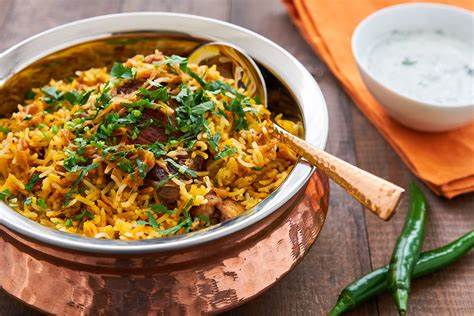

Chicken Biryani

Description
Biryani is a popular rice dish of indian subcontinent.
it consists of chicken with yoghurt and blend of spices typically made using basamti rice.
Ingridents
- Bay leaf : 1 to 2
- star anise : 1
- green cardamoms : 10 to 12
- black cardamoms : 1
- two inch piece cinnamom : 2 (2 grams)
- fennel seeds : 1½ teaspoon
- black pepper : ¼ to ½ teaspoon
- cloves : 8
- caraway seeds (or cumin) : 1 teaspoon
- mace : 2 strands
- grated nutmeg : ¼
Steps
Fried Onions
- heat oil in pan.
- combine thinly sliced onions in large bowl.
- Dust off excess cornstrach and fry onions for 7-8 minutes or
until deep brown and drain oil from paper towel. fry onions in batches to prevent overcrowding
- Add milk to a bowl and heat it for 40 seconds, then add saffron strands and stir it. set it aside
Marinate Chicken
- clean and wash chicken pieces
- Combine the rinsed chicken pieces with lemon juice in a large whisking bowl. Toss to combine. Cover and refrigerate the chicken for at least 30 minutes.
- after some time, add yogurt, birayni spice blend and ginger-garlic paste
- Add fried onions, mustard oil, cilantro leaves, and mint leaves to the chicken.
- Mix and toss the chicken to coat in tis marinade. Rub the marinade all over the pieces.
- Cover and allow it to rest for an hour.
Rice Preparation
- pre-soak the rice for 20 minutes
A minimum of 20 minutes of soaking time is recommended to achieve the best results.
- Add water to large pan with tight fitting lead. Flavour the water with whole spices, cumin seeds and salt
- Add rinsed rice to water. Simmer the rice for 10 minutes, uncovered.
- Gently mix the rice and parboil it for 4-6 minutes in hot water.When the cooking time has elapsed, turn off the heat and let the rice stand in hot water for 4-5 minutes. The rice should be 70% cooked.
- drain the water from the rice
- discard the whole spices from rice and keep the rice warm
Cook the chicken
- Heat ghee in a heavy-bottomed Dutch oven. Add chicken and cook.Chicken should only be half cooked
- Cook the chicken pieces for 5-6 minutes over medium heat.
Assemble the Biryani
- Take a large pan and Drizzle oil or ghee at its base. Add bay leaves and sliced onions to this pan. Sauté until the onions are translucent.
- Add half-cooked chicken to the pan.
- Layer it with parboiled rice and drizzle a generous amount of ghee over it.
- Layer this delicious biryani with chopped cilantro, mint leaves, and fried onions. Drizzle the saffron milk mixture overtop.
- Finally, add a dash of garam masala. Sprinkle a tablespoon of water and seal the pan.
- Cover the pan and seal the cover with a cloth or kneaded dough. cook for 10-15 minutes until rice is cooked thoroughly and is all fluffy and plump.
- Remove the cloth and uncover the pan once the desired cooking time is done.
- Chicken biryani is all ready. Allow it to sit undisturbed in the pan for 5-10 minutes.s